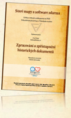

Abstrakt diplomové práce:Práce shrnuje oblast digitálního zpracování a zpřístupnění historických dokumentů (především starých map a vedut) z pohledu knihoven a archivů. Pro uvedené instituce je sestavena kolekce volně dostupného software (přiložena na CD-ROM), která umožní digitalizované kopie historických dokumentů konvertovat, editovat, indexovat i zpřístupňovat. Dále jsou popsány standardy a datové formáty využívané během celého procesu digitalizace, katalogizace i zpřístupnění. Práce se věnuje i editaci a publikování opravdu rozměrných rastrových obrazů na PC. K digitálnímu publikování je využit software Zoomify, ale byl vytvořen i nový zobrazovací software využívajicí technologie JavaScript. Struktura uložení dlaždic Zoomify byla analyzována a je využita jako hlavní zdroj obrazových dat pro nový zobrazovací systém ale taky pro georeferencované zpřístupnění map pomocí Google Earth. Zvláštní důraz je kladen na možnosti prohledávání databáze historických dokumentů pomocí záznamu s georeferencí, především s využitím volně dostupného projektu TimeMap. Vyšetřeny jsou i nástroje pro georeferencování starých map, tisků a vedut a také možnosti uložení georeference v metadatech, především v knihovním bibliografickém záznamu.
Výsledky diplomové práce jsou
využity jako součást řešení výzkumného záměru MK00009494301 „Historické
fondy Moravské zemské knihovny v Brně“. Pro publikování výsledků této práce byl zřízen web www.staremapy.cz, kde byly také vystaveny vůbec první staré mapy našeho uzemí pro program Google Earth. | Shrnutí výsledků práceText PráceProjekty
Přednášky na DVDCitované materiályDVD-ROMDVD s diplomovou prací, software a předáškami bylo vydáno jako publikace. Je k dispozici ve velkých knihovnách. ISBN: 978-80-7051-173-2  |
Copyright (C) 2006 - Projekt Projekt Staré mapy
Založil Klokan Petr Přidal
Reklama: Scootland - skútry, scooter tuning, náhradní díly